151. Reverse Words in a String
官方思路:
- split
- split
- deque
思路整理：
答案第三种采用了deque+stringbuilder的方法。图中采用了完全相同的逻辑但是使用了传统的string拼接方法。总体逻辑为先去掉首尾的whitespace，调用trim api或者手动去都可以。之后遍历string，设置一个局部string temp代表每一个word，当遇到一个非空格 字母时向temp中写入这个字母，当遇到一个空格时说明一个word结束，将temp中的内容写入答案，将temp设置为空继续寻找下一个word。
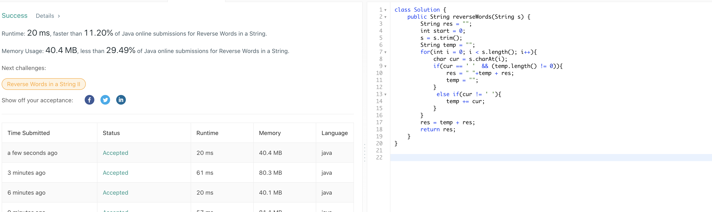152. Maximum Product Subarray
官方思路:
- dp
思路整理：
经典dp题型，与以往dp不同的是我们这次在对数组进行遍历时不仅要记录局部最大值，还要同时记录局部最小值，因为对数组稍作观察就会发现两个很大的负数乘积会成为新的局部最大值，如果不做记录我们就得不到这种情况下产生的最大值。明确了这个核心思想 就可以开始dp了，初始值max，min，result都设置为数组第一个元素，从第二个元素开始dp。此时有两种情况可以帮助思路更加清晰，第一碰到一个非负数，此时max可能变得更大，min也可能变得更小。max从之前的max乘以cur一定会变得更大（或者持平），而min乘以cur也 一定会变得更小（或持平），原因在于当前看到的数字是非负的。我们相应更新min和max即可。另一种情况，看到当前数字是个负数。此时max变得更大只能是从之前的min乘以cur得到的，例如-2，3，-2中前两个数min为-6，再看到-2时max就变成-6*-2得到12。注意在更新 max前需要把看到cur前的max记录下来用来更新min，例如-2，3时max为3，我们需要记录此时的max，在看到cur也就是-2时将就max和-2相乘得到新的min -6，原因是当看到一个负数cur时，新的min总是从之前的max和cur相乘得到的。这样我们对于数组每个数组都对max和min 对应的更新，res自然就是记录max的全局最大值，也就是保留所有出现过的max局部最大值中的最大者。
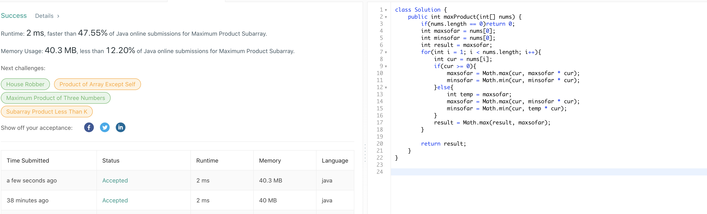153. Find Minimum in Rotated Sorted Array
官方思路:
- 二分查找
思路整理：
经典二分查找题型，在这种数组有反转的情况下我们需要做的是将mid的值与数组两侧的值进行比较从而判断目标的相对位置进而移动start和end的位置。一开始使用mid和start比较但是发现做了无用的判断，因为题目是升序排列的所以更好的做法是将mid和end的值做比较从而达到一次 就确定移动方向的目的。例如当mid大于start时我们无法判断最小值位置mid左侧还是右侧，就要进行二次判断。而当mid大于end值时说明最小值一定在mid右侧，因此将start更新为mid+1。同理当mid小于end时将end更改到mid位置。这里要注意不要将end更改到 mid-1位置，因为此时我们只知道mid位置比end位置小，并没法判断mid是不是我们要找的最小值所以不能直接跳过mid，例如3，1，2中mid小于end如果直接将end更改为mid-1就把正确答案1直接跳过了，这一点要注意。循环结束时start和end都被移动到最小值处，返回nums【start】即可。
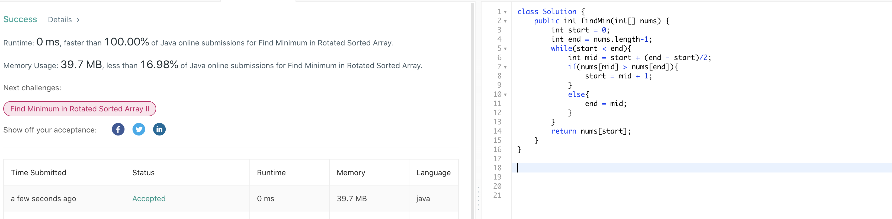155. Min Stack
官方思路:
- stack
思路整理：
此题我们不使用现成的stack而最好是自己定义需要的数据结构，观察发现我们需要的其实就是一个可以存储两个值min和val的linkedlist，我们在node class中加入min属性即可。实现minstack逻辑很简单，创建一个空的head节点，push时首先判断head是否为null，是的话创建一个新节点head，val和min都是x的值， 不为空的话同样创建一个新节点。更新val和min，min为旧head的min和x中较小者，并将该节点的pre指向老head。pop时head节点向前移动一个，直接 head = head.pre即可。top和getmin分别返回head的val和min即可。
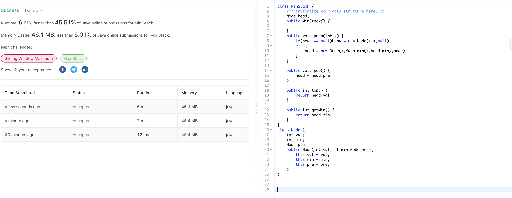156. Binary Tree Upside Down
官方思路:
- 递归
思路整理：
递归翻转树，首先判断根节点是否需要处理，当左右都不为空时需要翻转，否则返回null或者叶子节点。当需要翻转时，递归调用左子树并将结果保存为newroot，这将是翻转后的root。之后对每一个子树进行拼接，先将root.right拼接到root.left.left，再将root拼接到root.left.right就完成了子树的翻转。每次完成一个左子树的反转， 由递归来完成整个树的翻转。
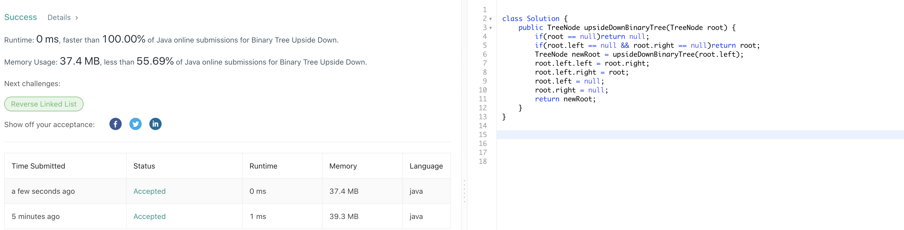157. Read N Characters Given Read4
官方思路:
- 一轮循环
思路整理：
很难懂一道题，简要概括了一下题目的意思。n是需要从file中读取的字符数，并不意味着file中字符就是那么多个，真正的file里有多少个字符我们不知道。我们读取file只有一种方法就是通过read4 api每次读取四个字符并存放到一个数组中。我们还需要在每次读取后将获得的字符写入叫buf的数组中使得buf最后长度恰好为n。 由于我们需要读取恰好n个字符写入buf，每次read4 api每次只能读取四个字符，所以我们需要在读取到n个字符时停止，此时read4中可能还有剩余的字符。例如file 内容为leetcode总共八个字符，但是我们只需要读取前五个，此时调用read4会读取两次拿到所有八个字符然而我们只需要前五个。因此我们只需要判断剩余字符 数量是否小于4个，一旦小于说明我们已经拿到所需的n个字符，舍弃掉read4里剩余的字符并结束循环。我们设置一个计数器total记录已经读取了多少个字符，一个count表示此次读取我们将会写入buf（确实需要的）的字符数量，一旦（n-total）小于4个时我们知道已经读取了n个需要的字符，结束循环即可。读取和复制到buf的具体实现很简单，见代码。
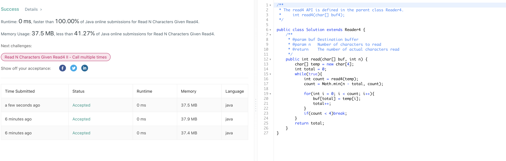159. Longest Substring with At Most Two Distinct Characters
官方思路:
- 双指针一轮循环
思路整理：
此题注意去重复只能使用hashmap，hashset不可取因为set的性质决定了无法将重复清理干净，eceba时只能去掉第一个e而无法去除第三个。一开始忽略了这一点，采取hashmap后就很简单了，设置两个指针i和j，j为快指针，i为慢指针负责去重复。我们可以使用map自带的getordefault方法，没见过的放入map中counter设置为1，见过的直接更新count++。 当mapsize大于2时需要去重复，移动i指针，将i看到的数字在map中的counter--知道某个数字出现次数为0时将它完全remove掉回复mapsize为2. res在整个过程中记录下j-i的最大值即可。
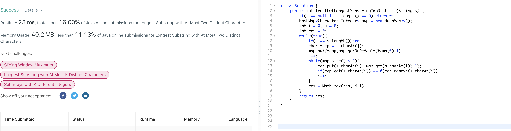160. Intersection of Two Linked Lists
官方思路:
- 双指针
思路整理：
hashset的方法很容易想到，这道题有一种巧妙的双指针解法。指针设置在head和headb处，当两个指针为相遇时分别向后移动，当heada来到末尾即等于null时将它指向headb处接着移动，同理headb来到末尾时重新指向heada。相当于指针a先跑完了a链表，再去跑b链表，而指针b先跑b链表再去跑a链表，相遇前走过的总路程的一样的。我们只需要返回他们第一次相遇时 a指针所指向的节点即可。
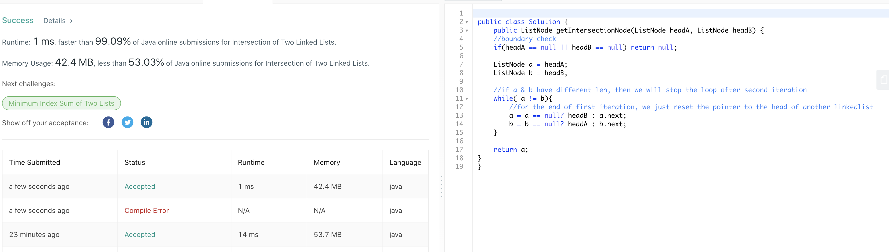161. One Edit Distance
官方思路:
- 一轮遍历
思路整理：
首先观察什么情况下满足题目条件，当两个string长度相同时且只有一个位置不同时满足条件，当两个string长度相差1且除了多出的一个字符其他位置全部相同时满足。我们可以根据这两个条件简化问题。首先我们只考虑string s小于等于string t时的情况，当string t长于string s时我们调用isOneEditDistance(t,s)即可 。假定s长度小于t后我们开始从s第一个位置一个个比较，相等自然不用说，不想等时有两种情况。当s和t长度不同时遇到一个不想等字符，例如s = "ab", t = "acb"，我们只需比较s.substring(i)和t.substring(i+1)是否相同，如果相同则满足条件，此时c是那个插入的位置。当s和t长度相同时同理，只需要比较 s.substring(i+1)和t.substring(i+1)是否相同，例如 s = "1203", t = "1213"，如果相同满足条件，此时不同的位置是被替换的位置。如果s里所有字符都和t里前s长度个字符相等，我们还需要判断s和t长度是否只相差一个，是的话则满足条件。
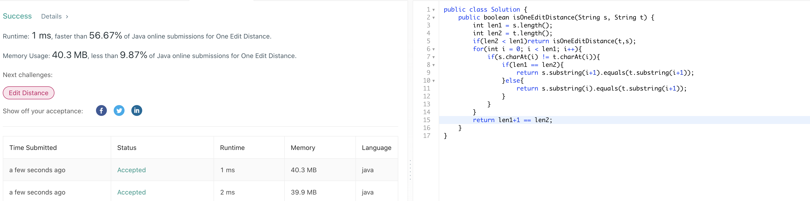162. Find Peak Element
官方思路:
- 二分查找
思路整理：
线性查找的思路很容易想到，二分查找经常用在有序的数组上，此题并未声明有序但是我们依然可以基于一种巧妙的思路将此题转换为二分查找问题从而提升速度。核心思想在于由于我们只需要寻找到任意一个peak，我们可以根据二分查找中mid位置大小和mid+1位置大小来推断出peak的相对位置。当nums[mid] > nums[mid+1]时，peak的 数组段处于下降趋势，因此peak只能在mid或者mid左侧，将right更新为mid。当nums[mid] < nums[mid+1]时数组段处于上升阶段，peak只能在mid右侧，更新left为mid+1。这样进行二分查找当循环结束时left和right都必然指向peak位置，返回left即可。
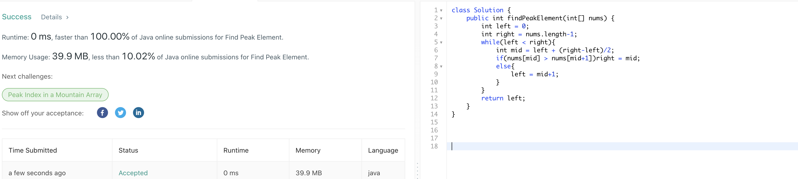163. Missing Ranges
官方思路:
- 无
思路整理：
此题可以通过遍历nums数组来构建答案，但是有三个地方要注意edge case，首先是进入nums【0】时，如果nums【0大于lower时需要添加前面缺失的range，如果nums【0】和lower相差1则不需要箭头，否则需要。之后每次更新lower到i+1处，注意当i == upper时需要立即结束循环，避免当i等于2147483647时lower越界。当nums中所有i处理完毕 后我们仍需要考虑处在nums最后一个数字和upper之间的range，即当循环结束后lower <= upper时，同理判断upper是否大于lower，如果是需要添加括号，等于则不必。
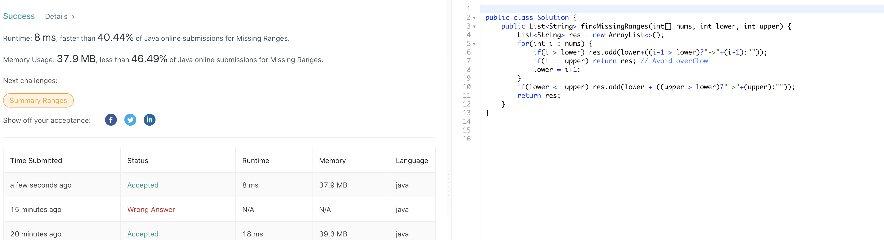165. Compare Version Numbers
官方思路:
- 无
思路整理：
既然要求分开点去比较version号，我们直接调用split api即可，将string1，string2拆分成两个string数组v1和v2.之后我们以较长数组为基准进行遍历，用尽的数组剩余部分设置为0，每次拿出一截版本号parse成interger（v1diigit和v2digit）进行对比。相等暂时无法判断，continue即可。如果v1digit大则必然version1大，返回1。同理 v2digit大时必然versoin2大，返回-1.如果所有的都一样则说明version相等，循环结束后返回0.
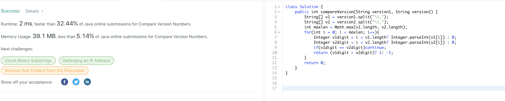166. Fraction to Recurring Decimal
官方思路:
- 利用长除法性质发现循环，利用long类型避免int overflow
思路整理：
题目看似简单，实则很多地方要注意。整理了一下总共有两大部分需要小心，第一是题目核心小数点后循环的判断，第二是经常出现的int整型overflow问题，在除法中经常出现。overflow的问题我们用来办法long代替int即可解决。循环的判断就比较巧妙，标答使用了hashmap来判断。为什么想到hashmap呢，其实是基于长除法的性质，我们来看下1除以6时发生了什么， 首先1除以6得到0，这是小数点前的一位，但是由于余数为1长除法没有结束，进入小数点后的部分。此时我们用小学学过的知识，将1乘上10得到10再除以6，得到1为小数点后第一位，余数为4.再把4乘上10得到40，除以6得到6余数为4.此时我们发现循环开始了，原因是余数一直为4，导致商对应位置一直为6.因此基于这个事实我们发现当余数重复出现了以前出现过的数字 时可以判定为有循环，此时加入括号终止循环即可。判断重复自然是老办法hashmap，key存储余数，value存储当前商的长度。例如0.16时第一个6的value为3，当下一个6重复时我们在3位置插入左括号，在结尾append一个右括号后结束循环即可。插入操作可以使用stringbuilder自带的insert api来完成，其余操作并不复杂，见下图。
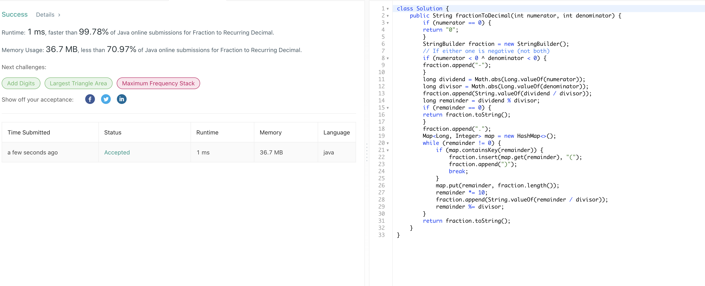167. Two Sum II - Input array is sorted
官方思路:
- 双指针
思路整理：
我们可以充分利用数组已经有序的条件使用双指针一轮遍历来进行搜索。设置start为0，end为length-1，每次比较nums【start】+nums【end】与target大小关系，相等则返回答案数组，小于则向后移动start指针即start++，大于则向前移动end指针即end--， 由于每个输入必有一组答案，找到后直接返回答案即可。
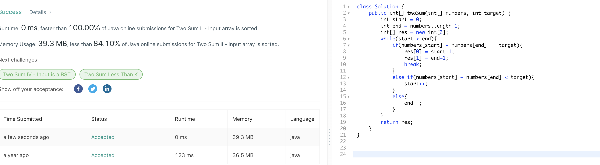168. Excel Sheet Column Title
官方思路:
- 一轮循环
思路整理：
答案的思路非常巧妙，利用了char在utf8字符表中的相对位置来进行int和char之前的转换，简而言之就是根据一个数字距离a的位置来自动将该数字转换成对应的char。为了得到相对字符a的距离，拿到一个int后先对他进行--操作，例如1--得到0说明距离a为0，转换为a， 2距离a为1转换为b以此类推。26被转换为z，当距离大于25时重新从0开始计算。例如27距离a为26，也就是走了一轮字母表后回到啊，因此转换成a。创建一个stringbuilder，每次判断末尾转为哪个字符并插入stringbuilder开头，n除以26进入下一位。当n为0时循环结束。
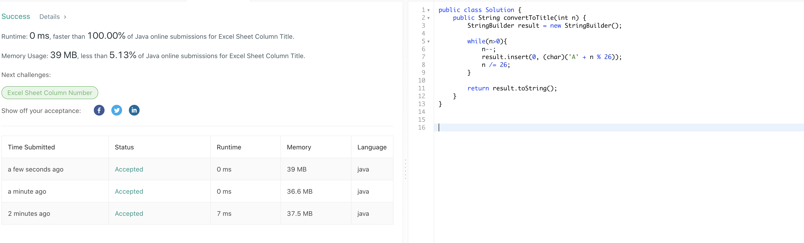169. Majority Element
官方思路:
- hashmap
- sort
- divide and conquer
思路整理：
主要说说sort的方法，如果只是求出现次数最多的没有给出 more than ⌊ n/2 ⌋ times这个条件，我们就只能分别统计每个不同的数字出现次数，记录下最多次数字的下标然后返回，这个一轮遍历即可完成。答案思路充分利用了题目条件，既然出现次数大于总数一半，我们sort后这个 出现次数多于一半的数字必然处于数组中间，也就是nums[nums.length/2]位置，因此我们直接返回该位置数字即可。
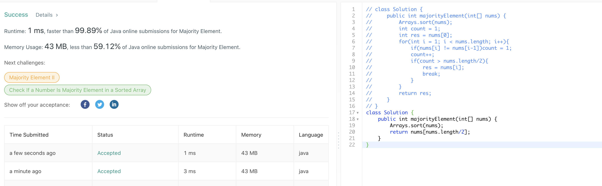170. Two Sum III - Data structure design
官方思路:
- hashmap
- sort
思路整理：
自己设计数据结构的two sum，简单说说sort的解法。首先判断使用哪种数据结构，根据题目我们需要动态添加，快速查找的功能，马上想到arraylist。在twosum类里初始化一个arraylist对象并在构造器里实例化，就可以在类里拿来使用了。add方法就是直接往list里add那个数字。 find方法我们先调用collections的sort api对list进行排序后，使用双指针进行查找即可。具体实现同167题，见下图。
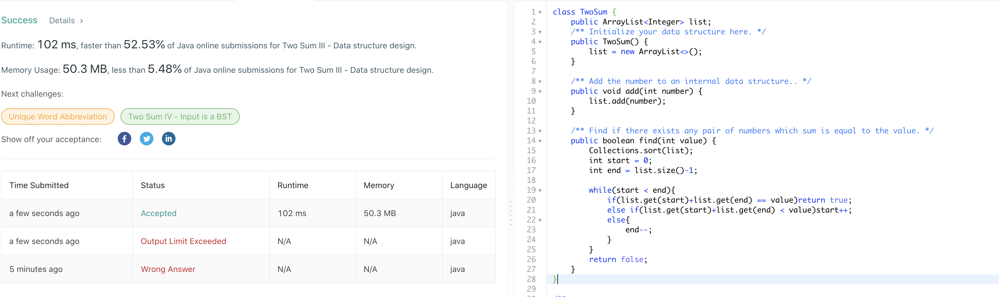171. Excel Sheet Column Number
官方思路:
- 一轮循环
思路整理：
与168题类似，利用utf8机制在char和int间实现转换，由于a转换成utf是65，我们需要将char转换成int后减去64，每增加一位将结果乘以26即可。
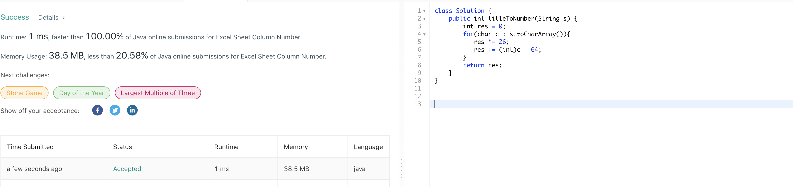172. Factorial Trailing Zeroes
官方思路:
- 计算所有5的幂个数
思路整理：
其实是一道基础数论题，0个数由2个数和5个数决定，2肯定够用，所以由5的个数决定。这里要注意5的幂中所有5都要考虑进去，方法很简单，首先计算5的倍数个数，其次25倍数个数，然后125以此类推，知道该5的幂超过n。为了处理整数上限问题 我们将base设置为long类型，当base小于等于n时持续计算5的所有幂个数即可。实现很简单见下图。
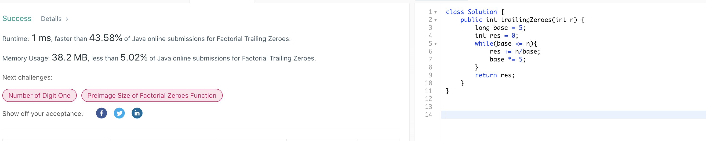173. Binary Search Tree Iterator
官方思路:
- inorder stack traverse
思路整理：
首先思考底层用什么数据结构，我们要从小到大traverse一颗bst，也就是inorder traverse，根据以前的经验我们知道stack可以完美实现这个操作。我们先将根节点左子树入stack，例如题目中的树，我们先将最小的（左子树）7和3入stack，调用next时我们先对stack进行pop，然后若该节点有右节点，我们需要将以该节点为根节点的左子树入stack。这个顺序和inorder traverse bst的顺序一致。next方法最后返回pop 的节点的val，hasnext方法直接调用isempty判断stack是否为空即可。
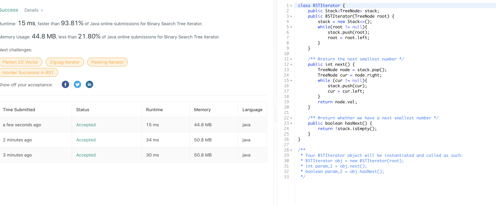179. Largest Number
官方思路:
- 重写compare方法
思路整理：
标答使用的方法是实现了一个自定义的LargerNumberComparator类继承了string的comparator类，然后重写了其中的compare方法，通过这个自定义的string的comparator我们就可以方便的对原数组进行排序得到我们想要的顺序。这个自定义的comparator接受a和b两个string参数，然后比较a+b和b+a大小关系后 以逆序输出，例如3和30被转化出330和303进行比较后会得出，303大于330的反向结果，我们需要对比较结果取反的原因是array的sort方法默认从小到大排序，而我们需要从大到小排序，因此定义成逆序后调用sort正好可以得到降序结果。有了这个自定义comparator后我们将原int数组转换成string数组后调用sort就可以得到 降序的结果，处理一个edge case即全部为0后将结果string返回即可。个人感觉反向比较的思路不是很自然，我们完全可以就按照从小到大的顺序sort输入的string数组，之后再逆序加入到答案string当中返回，特殊情况判断末位（最大的string）是否为0即可，见下图。
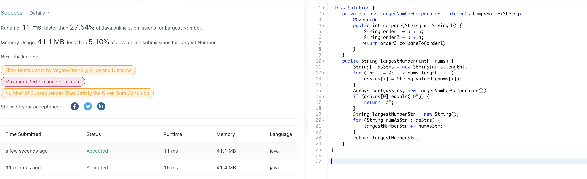 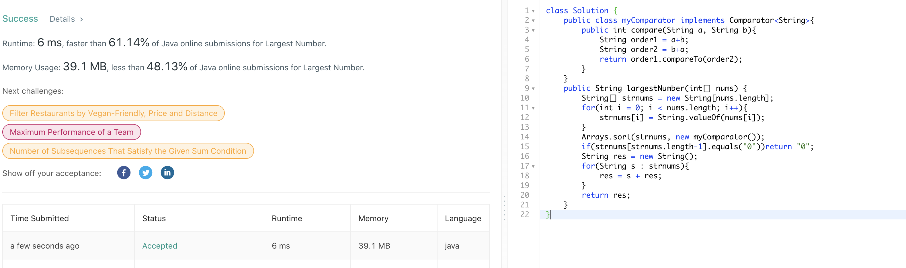186. Reverse Words in a String II
官方思路:
- reverse string + reverse word
思路整理：
此题意在让我们用o1 space来实现变换。观察到对数组的变换可以拆分成两步，第一步reverse整个数组，这个o1很容易实现。第二步是对空格之间的每一个word进行reverse，我们可以使用双指针来定位需要reverse的起点和终点来实现这个局部reverse。也就是说我们只需要实现一个将数组中两个特定指针之间的部分reverse即可。 这个可以用一轮while循环加首位交换完成。reverse每个word时我们设置start，end两个指针，end先找到下一个空格位置，然后reverse start和end-1之间的部分，将start，end移动到end+1位置，当end小于s长度时重复这一循环即可完成每个word的reverse。
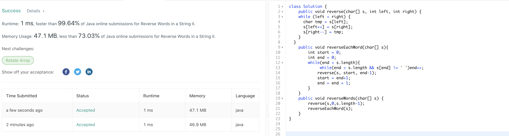187. Repeated DNA Sequences
官方思路:
- hashset
- rolling hashing
- bitmask
思路整理：
bitmask核心思路和hashset类似，简单说下好想到的hashset方法。遍历所有长度为10的substring，初始化两个hashset，seen和output，seen记录所有见过的substring，如果添加时某个string已经见过了则说明满足题目条件，加入ouput集合中，否则就是只出现一次的不满足条件。所有substring 筛选完成后将output集合，即出现过多余一次的string的集合转换为arraylist返回即可。
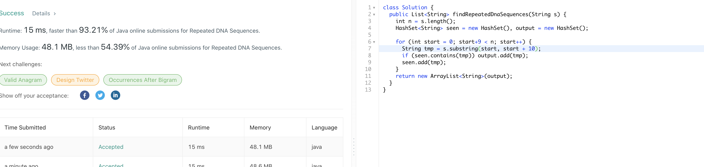189. Rotate Array
官方思路:
- Cyclic Replacements
- Using Reverse
思路整理：
说下reverse的方法，思路为首先reverse整个数组，然后再将数组分成k之前和之后两部分分别reverse得到我们需要的结果。reverse方法为设定start end两个指针，在start小于end时一次交换两个指针之间所有位置的数字，实现见下图。
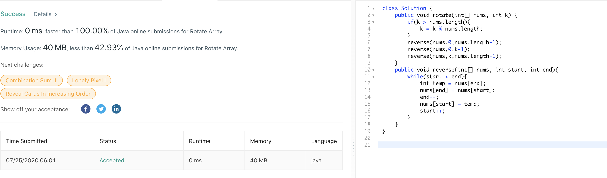190. Reverse Bits
官方思路:
- bit manipulation
思路整理：
题目要求反转所有的bit，自然想到bit manipulation，我们需要从input的右侧开始复制每一位bit直到左侧。观察发现通过右移input我们可以拿到input右侧开始的每一位，那么怎么判断这一位上是1还是0呢。可以使用（n & 1）的方法快速判断 n的右侧bit是1还是0，如果是1我们就要将res左侧位置变为1，通过res++方法实现，0的话不用做处理。这样我们就将res左侧复制为了input n右侧对应位置的bit值，进入下一轮循环后将res左移重复上述操作即可（开始复制res左侧下一个位置为input右侧对应位置）。
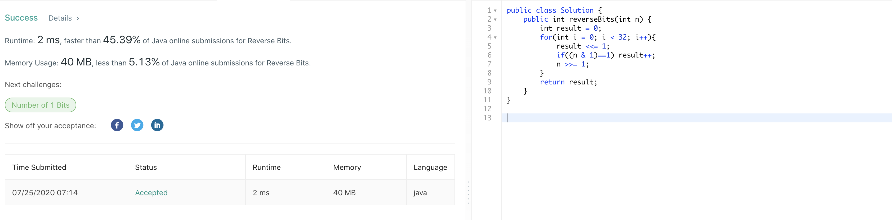191. Number of 1 Bits
官方思路:
- bit manipulation
- bit manipulation trick
思路整理：
思路一是通过右移操作检查n的每一位并记录有多少个1出现，判断末位是否为1的方法和上题相同，使用（n & 1）操作。第二种思路很巧妙，每次直接找到n 右侧下一个1，计数，将该位置1变为0，直到n本身变为0循环结束。难点在于如何将n右侧下一个1变为0，答案使用了 n & （n-1）操作，n-1将n右侧下一个1位置变为0，右侧所有位置变为1，&操作再将右侧所有位置变为0，也就是将n右侧下一个1位置变为了0。总结下两个位运算技巧，第一判断末位是1还是0时使用（n & 1）操作。第二将右侧下一个1位置变为0时使用 n & （n-1）操作。
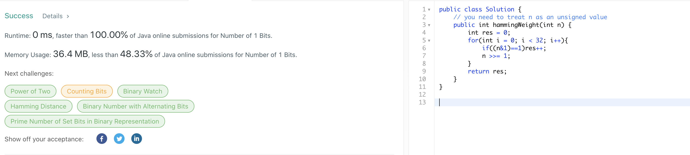